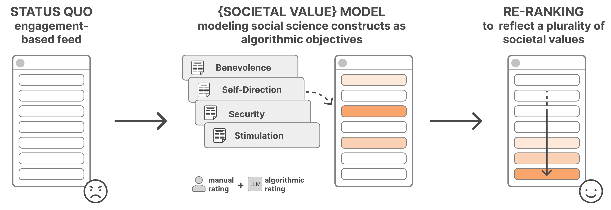

Artificial intelligence (AI) algorithms underpin social media. Algorithms sift through a large inventory of content, deciding what appears at the top of each user's feed. These social media AI systems can shape people's beliefs, affect their well-being, and change their behaviors. These consequences accrue to individuals, but also aggregate at the societal level where the value of social media AI has been stubbornly difficult to square with the societal harms that they produce. Such issues are in part due to the individualist values embedded in how social media AI software operates, maximizing each user's individual experience–-as inferred, for example, through their likes, retweets, and surveys–-at the cost of societal preferences, such as community health and civic engagement. This project aims to shape an alternative future where social media AI software aids us in achieving societal goals, by demonstrating the feasibility of integrating such societal objectives into social media algorithms used to prioritize content in users' feeds. The project goal is to create a method that can build translational science on top of social science and computer science, and develop engineering solutions that can be deployed at scale on social media, if desired.
This project will develop techniques for encoding societal values into social media ranking algorithms. Our multi-disciplinary team of researchers aims to 1) introduce a novel method that leverages the precise language of definitions and measurements of the social science constructs to build algorithmic objective functions using large language models (LLMs), referred to as societal objective functions, which can be deployed broadly as weights in social media ranking algorithms; 2) create a pluralistic algorithmic library of such societal objective functions based on rigorous and empirically validated social science theory articulating a broad space of values; and 3) build methods to integrate multiple potentially-competing values and understand the trade-offs between them. To achieve these goals, the project will weave together social science and computer science insights. Social science research will articulate the design space of societal values at play, as well as careful definitions and measurements of each of these values. Computer science research will translate these social scientific insights into AI models that agree with community ratings on the values expressed in social media content, enabling integration into feed ranking algorithms. By conducting large-scale field experiments with diverse populations, this project will provide empirical evidence on the impact of integrating a pluralistic library of societal values into such algorithms.
Reranking Partisan Animosity in Algorithmic Social Media Feeds Alters Affective Polarization
Tiziano Piccardi, Martin Saveski, Chenyan Jia, Jeffrey Hancock, Jeanne Tsai, Michael Bernstein
Science. 2025.
Reranking Social Media Feeds: A Practical Guide for Field Experiments
Tiziano Piccardi, Martin Saveski, Chenyan Jia, Jeffrey Hancock, Jeanne Tsai, Michael Bernstein
ACM Transactions on Social Computing. 2026.
🏆Distinguished Paper Award
Whose Values? Measuring the (Subjective) Expression of Basic Human Values in Social Media Posts
Ziv Epstein, Farnaz Jahanbakhsh, Tiziano Piccardi, Isabel Gallegos, Dora Zhao, Johan Ugander, Michael Bernstein
ICWSM'26: International AAAI Conference on Web and Social Media. 2026.
Alexandria: A Library of Pluralistic Values for Realtime Re-Ranking of Social Media Feeds
Akaash Kolluri, Renn Su, Farnaz Jahanbakhsh, Dora Zhao, Tiziano Piccardi, Michael Bernstein
ICWSM'26: International AAAI Conference on Web and Social Media. 2026.
Grok in the Wild: Characterizing the Roles and Uses of Large Language Models on Social Media
Katelyn Xiaoying Mei, Robert Wolfe, Nic Weber, Martin Saveski
ICWSM'26: International AAAI Conference on Web and Social Media. 2026.
Value Alignment of Social Media Ranking Algorithms
Farnaz Jahanbakhsh, Dora Zhao, Tiziano Piccardi, Zachary Robertson, Ziv Epstein, Sanmi Koyejo, Michael Bernstein
CHI'26: ACM CHI Conference on Human Factors in Computing Systems. 2026.
Lindsay Popowski, Xiyuan Wu, Charlotte Zhu, Tiziano Piccardi, Michael Bernstein
CHI'26: ACM CHI Conference on Human Factors in Computing Systems. 2026.
Lindsay Popowski, Helena Vasconcelos, Ignacio Javier Fernandez-Heinsen, Chijioke Mgbahurike, Ralf Herbrich, Jeffrey Hancock, Michael Bernstein
CSCW'26: Proceedings of the ACM on Human-Computer Interaction. 2026.
Embedding Democratic Values into Social Media AIs via Societal Objective Functions
Chenyan Jia, Michelle S. Lam, Minh Chau Mai, Jeffrey Hancock, Michael Bernstein
CSCW'24: Proceedings of the ACM on Human-Computer Interaction. 2024.
Social Media Feed Ranking Algorithms: Guide to Field Experiments
Tiziano Piccardi, Martin Saveski
SICSS@Stanford'25: Summer Institute in Computational Social Science at Stanford University.
Social Media Feed Ranking Algorithms: Guide to Field Experiments
Tiziano Piccardi, Martin Saveski
ICWSM'25: International Conference on Web and Social Media.
This material is based upon work supported by the National Science Foundation under Grant Nos. 2403433, 2403434, and 2403435. Any opinions, findings, and conclusions or recommendations expressed in this material are those of the author(s) and do not necessarily reflect the views of the National Science Foundation.